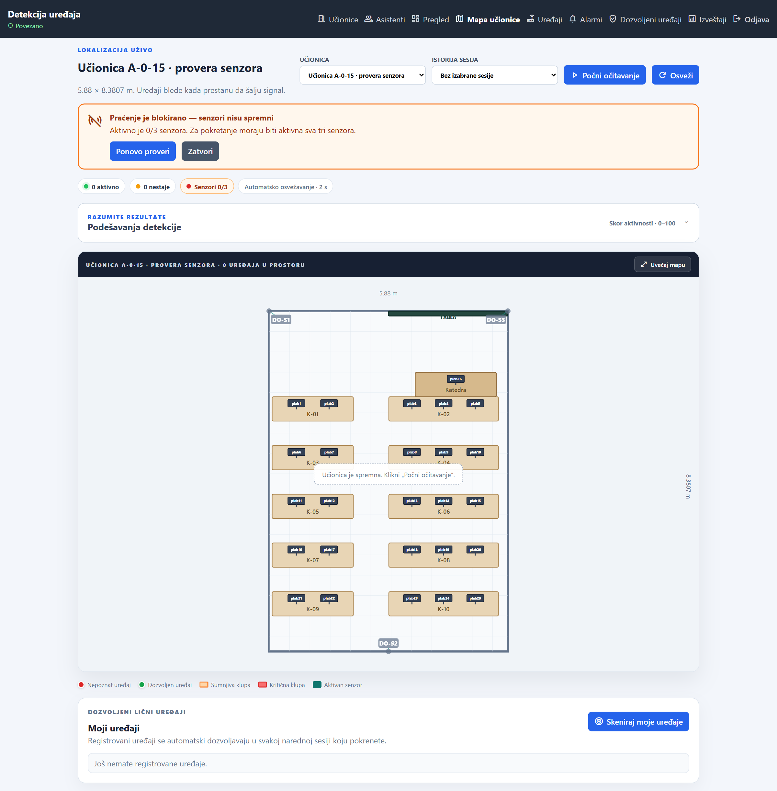
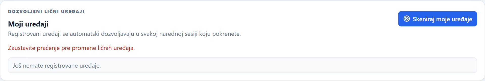
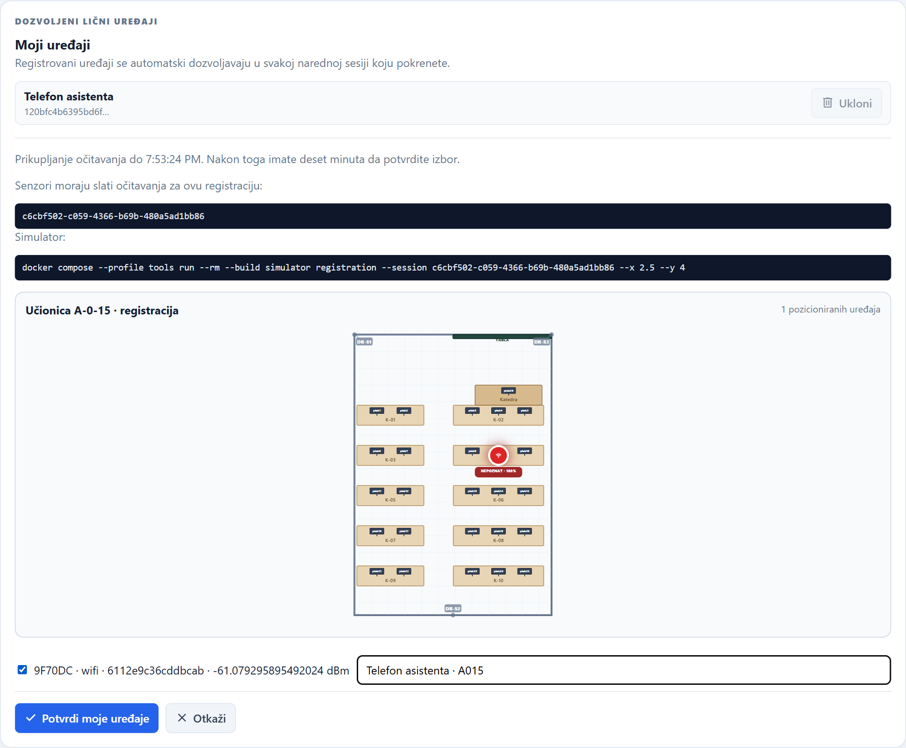
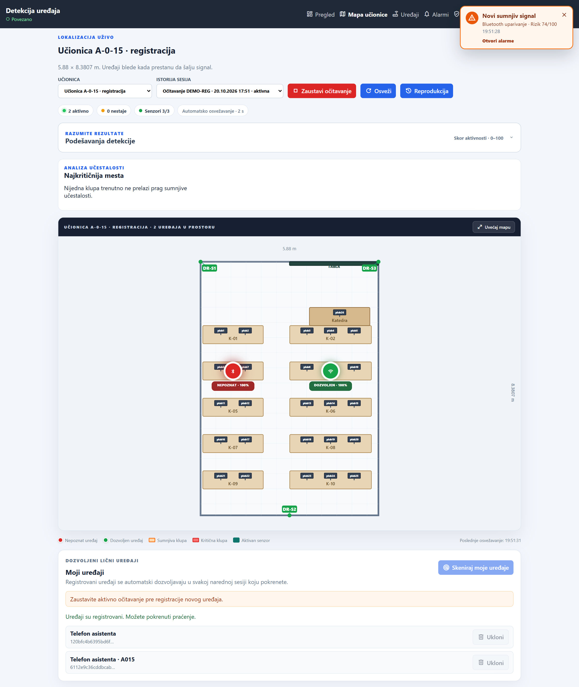
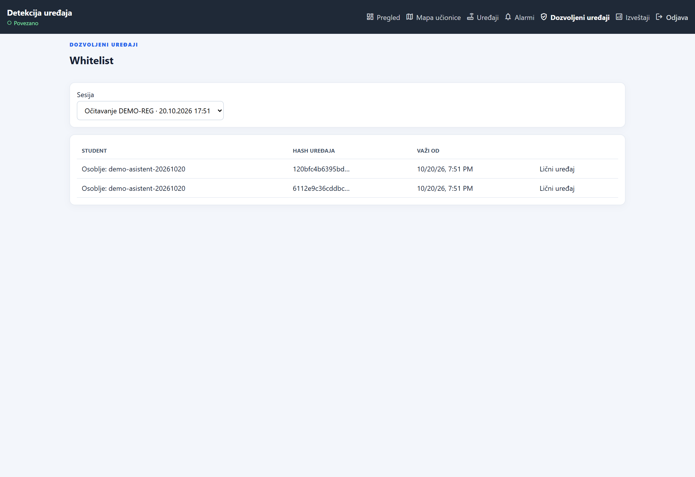

28. Praćenje je blokirano ako sva tri senzora nisu aktivna28-blokada-neaktivni-senzori.png
29. Registracija ličnih uređaja je blokirana dok korisnik ima aktivno praćenje29-registracija-blokirana-tokom-pracenja.png
32. Izbor i imenovanje detektovanog uređaja31-asistent-registracija-02-izbor-uredjaja.png
34. Asistent pokreće sopstvenu sesiju; njegov telefon je dozvoljen32-asistent-aktivna-sesija.png
35. Lični uređaj asistenta automatski je dozvoljen u novoj sesiji33-asistent-automatski-dozvoljen-uredjaj.png